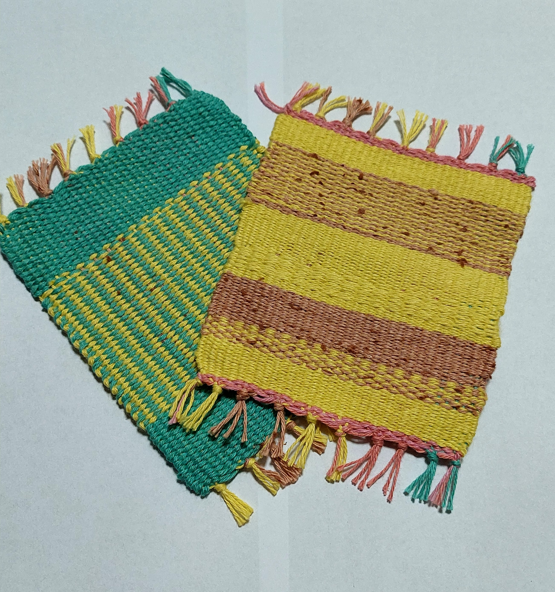

LEARN · CREATE · BLOOM
学ぶこと、つくること。
そこから可能性がひらく。学ぶこと、
つくること。
そこから可能性が
ひらく。
英語を学び、色とりどりの糸で自分を表現する。
スプリングは、一人ひとりの新しい一歩を応援する場所です。

自由な色で、自由に織る。TWO WAYS TO BLOOM
ことばと、糸。
ふたつの学びから。
英語を、
自分のことばに。
発音・TOEIC・英会話。目的に合わせて、楽しく着実に学びます。
VIEW ENGLISH →02 / SAORI自分の色を、
自由に織る。
好きな糸を選び、世界にひとつだけの表現を楽しみます。
VIEW SAORI →03 ABOUT SPRING
Springという
名前に込めた想い
春のように新しいことが始まり、泉のようにアイデアが湧き出る場所でありたいと願っています。
私たちについて →